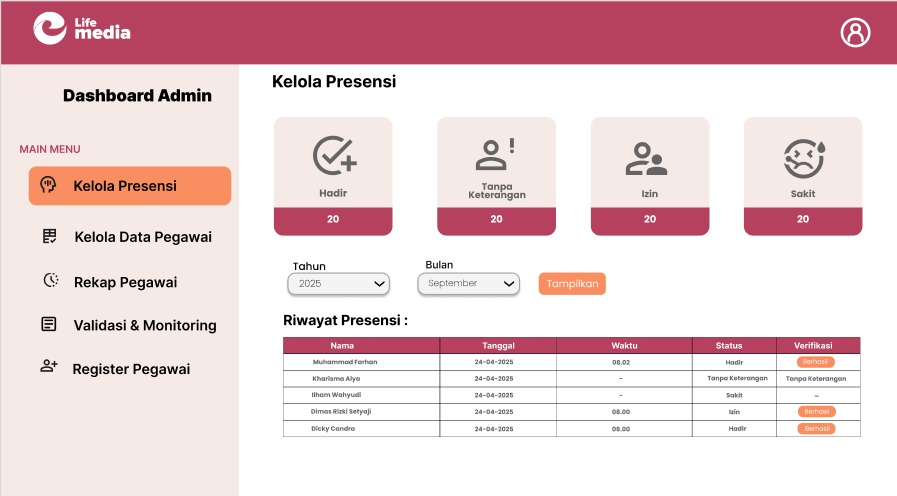
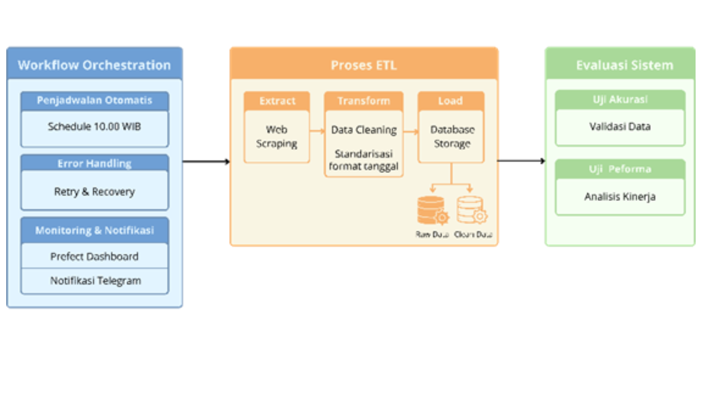
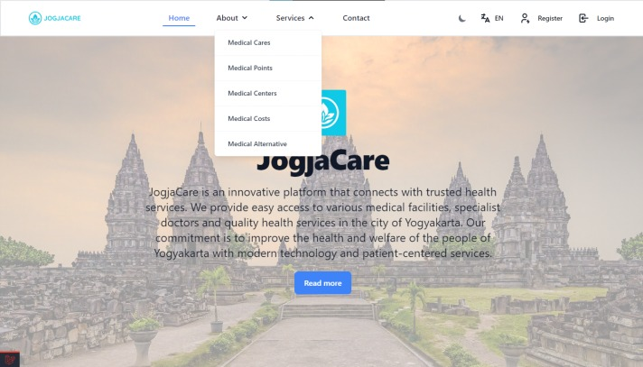

Information Technology Graduate
Kharisma Alya Septiana
Lulusan Teknologi Informasi yang berfokus pada analisis data, pengembangan pipeline ETL, dan dukungan operasional. Terbiasa mengelola proyek kolaboratif dan menerjemahkan kebutuhan menjadi solusi digital yang terstruktur.
About
About Me
Saya lulusan S1 Teknologi Informasi Universitas 'Aisyiyah Yogyakarta dengan fokus pada analisis data. Dalam tugas akhir, saya membangun pipeline ETL otomatis berbasis Python untuk mengumpulkan dan mengolah data Twitter/X, serta menerapkan metode machine learning seperti K-Means Clustering dan Random Forest. Saya juga memiliki pengalaman dalam administrasi operasional.
Saya berpengalaman mengoordinasikan proyek akademik sebagai Project Manager dan mengolah data sebagai Data Analyst. Saya juga pernah menangani administrasi operasional, layanan pelanggan, serta keuangan organisasi. Pengalaman tersebut didukung kontribusi dalam publikasi ilmiah dan pencapaian pada kompetisi tingkat nasional.
Selected Work
Featured Projects
Four focused projects that show Kharisma's work across data, web systems, UI design, and project coordination.

Capstone Presensi GPS & Kamera
Merancang alur sistem dan menganalisis kebutuhan untuk presensi berbasis GPS dan kamera.

SIMBPA – Skrining Ibu & Anak
Merancang UI desktop dan mobile serta prototipe interaktif menggunakan Figma.

Pipeline Scraping Twitter/X
Tugas akhir: mengembangkan pipeline ETL otomatis berbasis Python untuk data terkait studi kasus Program Makan Bergizi Gratis.

Project Manager
JogjaCare – Medical Tourism Website
Project gabungan beberapa mata kuliah dengan peran sebagai Project Manager untuk koordinasi tim, keputusan, komunikasi, dan problem solving.
More Work
Other Projects
Game Labirin
Project akhir Pemrograman Dasar berupa game labirin kelompok menggunakan C++.
Formulir Rekam Medis
Aplikasi pengelolaan data pasien untuk project Struktur Data dan Algoritma.
MoodleCloud Learning Project
Pengembangan pembelajaran berbasis MoodleCloud untuk Inovasi Pembelajaran Jarak Jauh.
Business Case - Indoned Gizi
Project kelompok untuk merancang strategi dan solusi pengembangan perusahaan.
Sistem Prediksi Penyakit Jantung
Membangun sistem prediksi penyakit jantung menggunakan algoritma Random Forest.
Prediksi Penjualan Coffee Shop
Menganalisis tren penjualan untuk menghasilkan insight pengoptimalan stok.
Analisis Clustering Kelulusan Mahasiswa
Menggunakan metode K-Means untuk clustering data historis mahasiswa berdasarkan tracer study dan pola tahun kelulusan periode 2016-2020.
Sistem Pakar Diagnosa Penyakit Asma
Sistem pakar berbasis website untuk membantu proses diagnosis awal penyakit asma menggunakan rule dan data gejala yang dikumpulkan.
Experience
Experience
Academic Experience
Surveyor Tracer Study
Bertanggung jawab dalam pelaksanaan Tracer Study dengan menghubungi alumni melalui WhatsApp, telepon, dan grup alumni untuk menyampaikan informasi serta mengingatkan pengisian kuesioner. Melakukan pemantauan status pengisian, memperbarui data alumni, merekap progres pengisian berdasarkan program studi dan tahun kelulusan, serta menyusun laporan perkembangan untuk memastikan pengisian kuesioner berjalan dengan baik dan mencapai target yang ditetapkan.
Academic Experience
Tim Akreditasi Program Studi & Asisten Penelitian
Program Studi Teknologi Informasi, UNISA Yogyakarta
2022Terlibat dalam penyusunan, pengolahan data, dan verifikasi berkas akreditasi program studi, serta membantu riset dan penelitian internal kampus bersama dosen.
Industry Internship
PT Sarana Insan Muda Selaras (Lifemedia)
Okt 2024 – Jan 2025Data Analyst & Operational Administration
- Melakukan monitoring jaringan Wi-Fi Coin Cleon secara rutin dan berkala untuk memastikan kualitas koneksi berjalan optimal.
- Mengelola administrasi pembagian hasil (profit sharing) bersama Person in Charge (PIC) secara teratur.
- Mengurusi billing penjualan voucher Wi-Fi serta mendukung seluruh kebutuhan administrasi dan operasional harian kantor.
- Melayani pelanggan dan menangani keluhan (customer service/support) terkait masalah teknis maupun layanan Wi-Fi.
- Melakukan analisis kelayakan layanan Wi-Fi Coin Cleon dengan metode Skala Likert dan dipublikasikan pada prosiding ilmiah nasional.
Community Service
Digitalroots Alpha: Pelatihan Kesehatan Keluarga Berbasis Teknologi
Desa Salam, Patuk, Gunungkidul · UNISA Yogyakarta & PT SIMS
15 Februari 2025Berpartisipasi dalam kegiatan pengabdian masyarakat yang membahas penggunaan internet secara positif dan pemanfaatan teknologi sebagai sumber pengetahuan kesehatan keluarga.
Baca liputan kegiatan ↗Community Project
Program Kreativitas Mahasiswa - TELE-UKS
SMP Muhammadiyah 2 Godean
2023Berpartisipasi dalam kegiatan PKM kolaboratif yang melibatkan mahasiswa bidang kesehatan dan Teknologi Informasi. Program berfokus pada peningkatan kesehatan siswa melalui skrining anemia dan edukasi pola hidup sehat.
Academic Program
Pertukaran Mahasiswa Merdeka
Universitas Brawijaya
2024–2025Mengikuti kegiatan akademik lintas universitas dan menyelesaikan proyek pengolahan data clustering kelulusan mahasiswa.
Recognition
Achievements
Finalist - National Scientific Writing Competition
Universitas Brawijaya, 2023
Menjadi salah satu finalis dalam kompetisi Karya Tulis Ilmiah tingkat nasional yang diselenggarakan secara online oleh Universitas Brawijaya.
Bronze Medal – National Essay Competition
FAPERTA FAIR
Meraih medali perunggu dalam kompetisi esai tingkat nasional.
Juara 3 Capstone Project Web Presensi
Capstone Project
Meraih Juara 3 melalui pengembangan proyek web presensi.
Research & Writing
Scientific Publications
Karya ilmiah dan publikasi kolaboratif
Jurnal Masyarakat Berdaya dan Inovasi Journal
Revitalisasi Trias UKS SMP Muhammadiyah Godean
Prosiding Seminar Nasional Universitas 'Aisyiyah Yogyakarta Proceedings
Analisis Kelayakan Layanan Coin Cleon Menggunakan Metode Skala Likert
Published Januari 2026 Publication
Positive Parenting Activities Character Building Early Childhood
Education
Education
Universitas Aisyiyah Yogyakarta
Teknologi Informasi
2022 - 2026SMK Negeri 1 Simpang Pematang
Teknik Komputer dan Jaringan
2018 - 2021Organization
Organization & Committee Experience
Leadership
ITech - Himpunan Mahasiswa Teknologi Informasi
Menyusun anggaran tahunan dan laporan keuangan berkala, serta menjaga kerapian dan kelengkapan dokumen transaksi organisasi.
Committee Experience
Pengalaman dalam kegiatan kampus dan kepanitiaan.
Kompetisi Keamanan Siber
Capture The Flag (CTF)
Seminar Nasional
Kepanitiaan acara akademik
Terabit
Kegiatan kemahasiswaan
Malam Keakraban
Makrab
Pengelolaan Keuangan
Tanggung jawab bendahara
Perencanaan Acara
Koordinasi kegiatan
Hubungan Masyarakat
Informasi dan publikasi acara
Skills & Credentials
Skills, Training & Certification
Data Analytics
Tools & Other Skills
Training

Networking Basics
Cisco Networking Academy

Belajar Dasar-dasar HTML dan CSS
Dicoding Indonesia

Introduction to Front-End Development
SkillUp

Fundamental Cyber Security
Digital Skill Course

Belajar Membuat Aplikasi Back-End untuk Pemula
Dicoding Indonesia
_page-0001.jpg)
Cloud Practitioner Essentials (Belajar Dasar AWS Cloud)
Amazon Web Services
Professional Credential
Certification
Business Intelligence Analyst
Sertifikasi kompetensi dalam pengumpulan, penelaahan, validasi, konstruksi, dan integrasi data serta proses review pemodelan data.
Contact
Let's Connect
Terbuka untuk kesempatan kerja, magang, project, maupun kolaborasi di bidang teknologi.